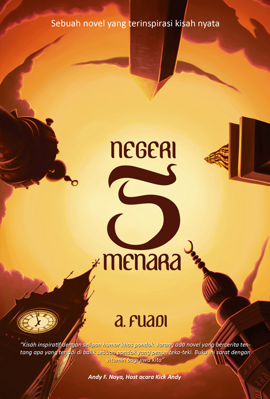

Bedah Buku: Negeri 5 Menara
Ditulis oleh: Ahmad Fuadi

Negeri 5 Menara adalah novel karya Ahmad Fuadi yang menceritakan perjalanan hidup seorang remaja bernama Alif Fikri. Alif berasal dari Maninjau, Sumatera Barat, yang memiliki impian untuk melanjutkan sekolah di SMA favorit. Namun, ibunya menginginkan Alif belajar di pondok pesantren. Akhirnya Alif menuruti keinginan ibunya dan masuk ke Pondok Madani. Di sana ia bertemu lima sahabat dari berbagai daerah yang kemudian dikenal sebagai Sahibul Menara.
"Man Jadda Wajada - Siapa yang bersungguh-sungguh, dia akan berhasil."
Bersama teman-temannya, Alif belajar tentang persahabatan, kerja keras, dan arti mimpi. Mereka sering berkumpul di bawah menara masjid sambil memandang langit dan membicarakan cita-cita mereka yang tinggi. Novel ini memberikan inspirasi tentang pendidikan, persahabatan, dan perjuangan meraih masa depan.